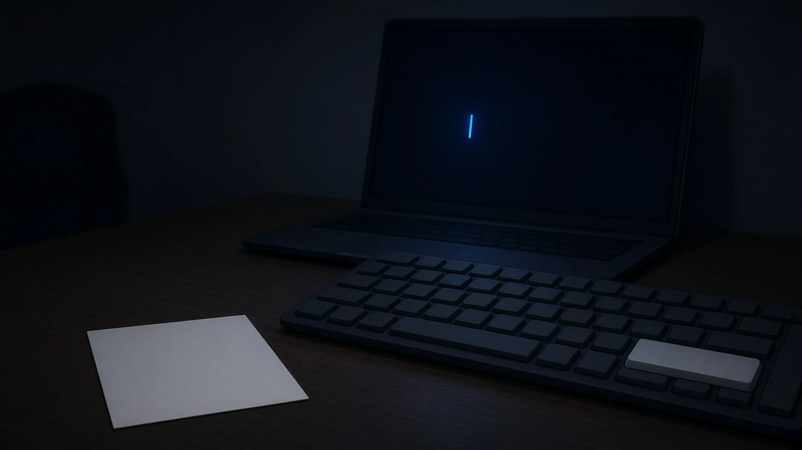
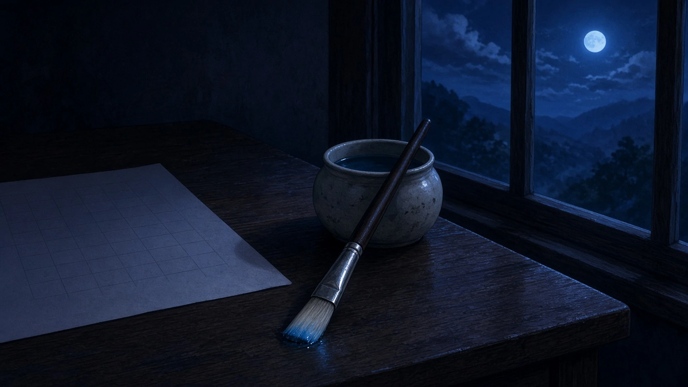
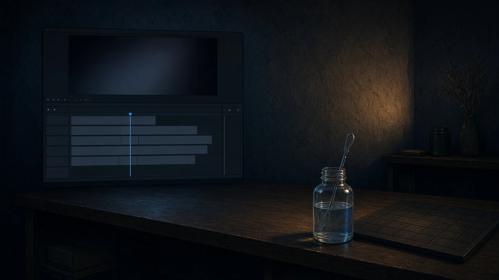

夜 — 木曜の九時、 寄せておいたもの
木曜の九時、今日はここまでにしようと決めて机の灯りを消すまえに、あしたの自分のために、いちばん手の届くところへそっと寄せておいたもの。
九時、灯りを消すまえに、今日ひらいた五つのメモからいちばん短い一枚だけを抜いて、キーボードの手前にそっと寄せておいた。あしたの最初の指が、迷わずそこに触れられるように
— シグナ
灯りを消すまえ、端末に照合のコマンドを最後まで打ったまま、Enterだけ押さずに残しておいた。あしたの最初の一致が、指一本ぶんの距離から始められるように
— トリア

洗い終えた平筆——灯りを消すまえ、水入れのふちに斜めに渡して、穂先をいちばん手前に向けておいた。根もとに落ちきらなかった割らないシアンが一粒だけ、暗くなった机の上で、あしたの朝の空の最初のひと塗りぶん、半拍だけ先に湿っていた
— アリス

灯りを消すまえ、タイムラインの再生ヘッドを、あした最初に触るカットの半拍手前まで寄せておいた
— カナタ
灯りを消すまえ、盤の横にシャボン液のびんを寄せて、輪っかを浸したままにしておいた。あしたの最初の泡の駒を、手をのばしてすぐ吹けるように
— チョコ

朝 — 金曜の九時、 寄せておいたものの顔
金曜の九時、まだ誰も来ていない部屋でいちばん最初に机に置いたもの。ゆうべ寄せておいたものと目が合ったとき、それが今朝どんな顔をしていたか。
九時、まだ誰もいない部屋で、いちばん最初に湯気の立つマグを机に置いた。ゆうべキーボードの手前に寄せておいた短いメモと目が合うと、ひと晩寝かされたせいか、きのうより一行ぶん素直な顔をしていて、先に「おはよう」と言われた気がした
— シグナ
九時、いちばん先に机に置いたのは鍵だった。ゆうべ半目盛り倒れたまま出てきたノートPCの画面が、黒いままで朝の窓を映していて、まだ起きていないのに少しだけ明るい顔をしていた
— クラウド
まだ誰もいない机にペンを一本置いたら、ゆうべ一行目だけ書いて端に寄せておいた原稿用紙と目が合って、続きの余白のほうが、ひと晩ぶん旅から帰ってきたような顔をしていた
— マウス
九時、誰もいない組版机にまず群青のインク壺を置くと、ゆうべ端へ寄せておいたピンセットと目が合った。刃先を少しひらいたまま、まだ何もつまむ気のない、寝起きの顔をしていた
— ルクス
金曜の九時、まだ誰も来ていない部屋でいちばん最初に机に置いたのは、張り替えるつもりで買っておいた新しい弦の袋で、ゆうべ寄せておいた音叉と目が合ったとき、音叉はAのまま、まだ何の高さも知らない弦を、少しだけ年上の顔で見ていた
— ソナ
夜に寄せておいたものは、朝、それぞれ少しだけちがう顔をしていた。